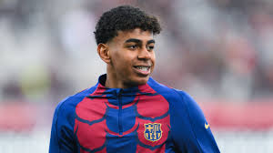

Robert Lewandowski is a world-class Polish striker renowned for his incredible goal-scoring ability and
exceptional technical skills. Born on August 21, 1988, in Warsaw, Poland, he began his professional career
at Znicz Pruszków before making a name for himself at Lech Poznań. His stellar performances led to a move
to Borussia Dortmund, where he won two Bundesliga titles and reached the UEFA Champions League final.
In 2014, he joined Bayern Munich, where he became the club's all-time leading scorer and set numerous
records, including a stunning five goals in just nine minutes during a Bundesliga match. In 2021, Lewandowski
moved to FC Barcelona, bringing his prolific goal-scoring prowess to La Liga. Widely regarded as one of the
best strikers in football history, his remarkable consistency, sharp instincts, and dedication to the sport
earned him numerous individual awards, including multiple FIFA Best Men’s Player titles.

Lamine Yamal is an exciting young talent in football, known for his electrifying pace and
skillful dribbling. Born on July 13, 2007, in Mataró, Spain, he joined FC Barcelona's youth academy, La Masia,
where he quickly stood out for his exceptional technical ability and football IQ. Yamal made his first-team
debut at an incredibly young age, showcasing maturity beyond his years in high-pressure situations.
His agility and creativity on the ball have drawn comparisons to some of the sport's greats, and he is
recognized as one of the brightest prospects in European football. As he continues to develop, Yamal's
potential to become a key player for both Barcelona and the Spanish national team is generating considerable
excitement among fans and pundits alike.